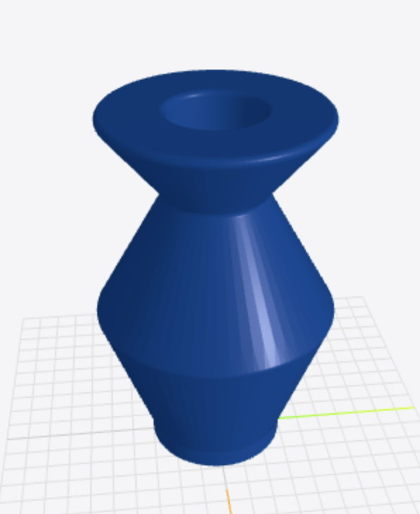

A side project in giving LLMs spatial superpowers — 30 tools, a self-correcting reviewer, and a live 3D preview that builds in real-time
The pitch
3D modelling is essential for creating physical products, and I looked around for tools that are easy to use. I have previously used CAD tools like NX and Autodesk Fusion but always found them a bit bulky. It also feels like a known fact that AI is going to take over most roles in the job market, and therefore why not see what a simple LLM could do with access to CAD tools? This project implemented an AI agent that does parametric CAD, with a constraint-driven Part Design geometry in FreeCAD, live, while you watch.
Why this matters
AI has yet to make a large dent in the CAD community. Imagine the possibilities with being able to ask a chat bot to create something physical, all the lookups for dimensions and mounting, materials get chosen and parts get optimized automatically. I have always loved the creative work possible with 3D modeling but it has always been bulky. With the help of AI tools we can try to make it easier.
There are currently some AI 3D generation tools like Adam AI, but most of them are plugins into traditional software, and are meant for people who know CAD and want it to be boosted with AI. This is a different approach where everyone should be able to create from scratch, without any CAD knowledge needed.
How it works
The stack: FastAPI + FreeCAD on the backend, React + Three.js on the frontend, and Claude (via LiteLLM) as the brain. The AI has access to 30 CAD tools — everything from add_rectangle and pad to sweep, loft, polar_pattern, and fuse_bodies.
Plan first, then build
The agent works in two phases. First, it writes a build plan — a markdown breakdown of what bodies to create, what strategy to use (pad vs. revolve vs. sweep), and the rough tool sequence. No tool calls yet.
Then the system says "Great plan. Now execute it step by step." and the agent starts calling tools. This two-phase approach was critical. Without it, the LLM would often start building before thinking, leading to geometry that couldn't be completed or had to be scrapped halfway through.
This can of course be further developed to a system almost like Claude Code, but this works as an early implementation.
The hard part — LLMs can't see
A limitation with the tool is that the LLM is not able to see what it creates. Imagine trying to draw something but only explain what lines to draw, but not being able to edit based on what you see. This is almost impossible, but the reality for the LLM. We can see that the LLMs have difficulties with this kind of spatial awareness, and it is difficult without constant feedback.
We still get the feedback as a human though, every time a geometry tool succeeds, the backend exports per-body STL meshes and pushes them to the frontend via Server-Sent Events. The Three.js viewer updates in real-time — you literally watch the model being built piece by piece, each body in a different color. It almost feels like watching someone work in a CAD program, except the "someone" is an LLM.
There was also a lot of problems with the tools failing because of the LLM trying to for example rotate an empty shape, and to combat this I built a self-correcting reviewer. When a geometry operation fails, a second LLM call kicks in. It receives the failed tool, the error message, the current model state, and the original build plan. Then it decides one of three actions:
# The reviewer decides:
# 1. retry — same tool, corrected arguments
# 2. skip — operation isn't critical, move on
# 3. rollback — delete problematic features, try a new approachCommon fixes it learns to apply: fillet radius too large, retry with half. Pocket deeper than the solid, switch to through_all. Revolve axis wrong, flip the geometry. It gets up to two retries per failure before giving up and moving on.
This really helped combatting errors and letting the LLM somewhat know what was going on.
Teaching an LLM to think like a machinist
The system prompt is ~200 lines of Part Design methodology, purely written by an LLM. I don't really like prompt engineering, and the prompts it comes up with are usually better than what I could write up. The current prompt encodes things like it should always create a body before a sketch, constrain your sketches before extruding, use patterns and mirrors for symmetry instead of duplicating geometry and much more. It tries to explain how to think about decomposing a 3D shape into a sequence of 2D sketch operations.
What works, what doesn't
Currently there are apparent things that could be improved like UI and seeing what is going on, but the most apparent part is that the sketches and parts created often are hit or miss. I noticed a HUGE difference depending on the model used, Claude Sonnet 4.5 and GPT 4.2 generating way better results compared to GPT-oss (which is currently running the website because being cheap), although Claude ate up credits like there was no tomorrow. I actually thought the system would work better than this, but I guess the amount of similar tools might make it confusing, and the model just creating pure STL code might be more efficient. This has been an evening-and-weekend project, and it has been really fun seeing how AIs can build out 3D design. This definitely is a possibility and can be improved by enough guardrails. I truly believe this could be turned into a business, and is something I might look into in the future.
Try it
Want to try it yourself? The live demo is up at agentic-cad-frontend.onrender.com — use passcode AgenticCadAccess to get in.
The project is open source: GitHub repository
If you want to run it yourself, you'll need FreeCAD (easiest via Docker with Conda) and an API key for Claude or another LLM. The README has setup instructions (sorry, but written by Claude).
Back to all posts